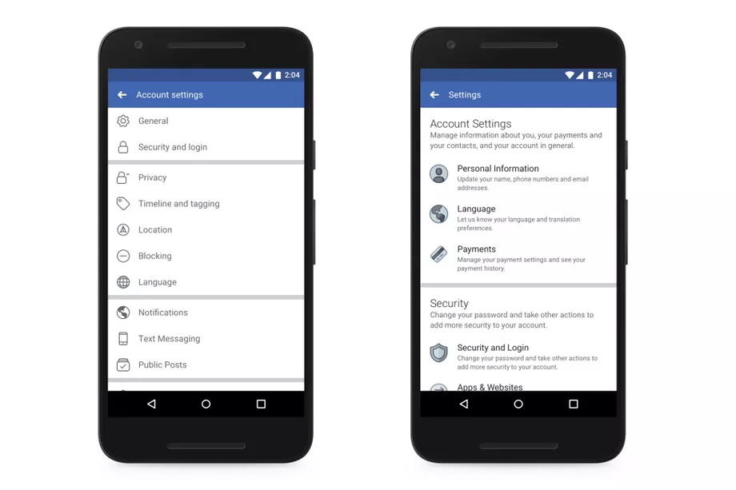

Facebook adjusted its privacy settings page today, following the ongoing Cambridge Analytica data scandal. Most obviously, the privacy settings page now features shortcuts with images to make it easier to navigate, particularly on mobile. Users can enable two-factor authentication, control what they share or
have shared, manage who can see their posts, and learn more about their ad preferences.
The company’s also launching a new page called “Access Your Information,” on which users can further evaluate the information they’ve shared and manage it. From there, they can delete anything from
their timeline or profile that they don’t want on Facebook.
None of these features are new; they just make data management easier to parse and more accessible. It’s nice to see Facebook attempt to publicize privacy settings that most people probably don’t know exist, even if it doesn’t actually change how the company does business.
Reminder: if you aren’t paying for a service like Facebook, you are the product, and it’s selling ads based on your data.
Facebook says it’s been working on these updates for “some time,” but expedited the release following the Cambridge Analytica scandal. (You can catch up on that here.)
I’ll summarize, though: Facebook used to allow app developers to access lots of user data, even without those users’ permission. That data was used, in this case, to build personality profiles of millions of people. Those profiles were then used for political ad targeting that could have swayed elections around the world.
The ad targeting Facebook sells isn’t unique to the company. The business model is applied around the web, but this scandal speaks more to the fact that many people have no idea how data collection and ad targeting work.
They also probably couldn’t find these privacy setting that Facebook is adjusting. If you’re worried about Facebook knowing everything about you, your friends, your family, and strangers, stop using the service, including WhatsApp and Instagram. That’s the ultimate privacy hack.
Another Ad
IN THIS STREAM
Cambridge Analytica: all the news about Facebook’s data privacy scandal
-
Facebook suspends ‘tens of thousands’ of apps from 400 developers over improper data use
-
Facebook responds to privacy crisis by making privacy tools easier to find
-
Playboy deletes its Facebook accounts
NEXT UP IN TECH
Apple, Google, and others asked to avoid travel and cancel big events
-
Apple and Google are cracking down on coronavirus apps to combat misinformation
-
Twitter now bans dehumanizing remarks based on age, disability, and disease
-
Facebook will take down Trump campaign posts that look like official census 2020 ads
-
Sonos is getting rid of the controversial Recycle Mode that needlessly bricked its older devices
-
Tech companies are getting more aggressive to fight COVID-19 hoaxes